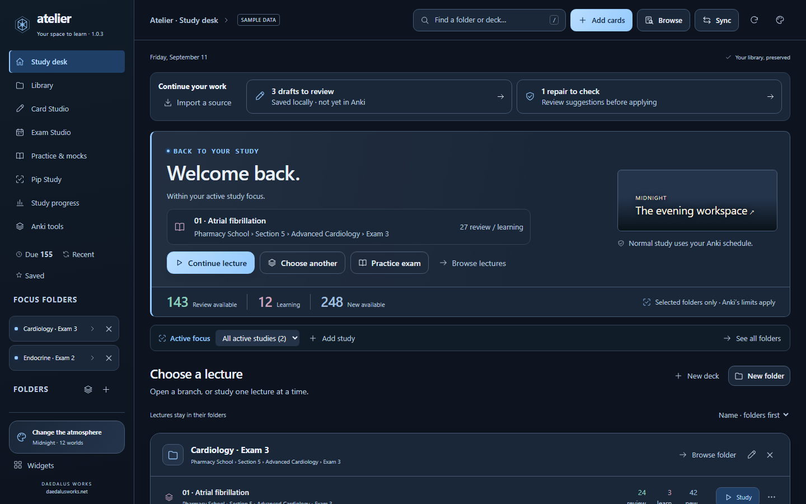
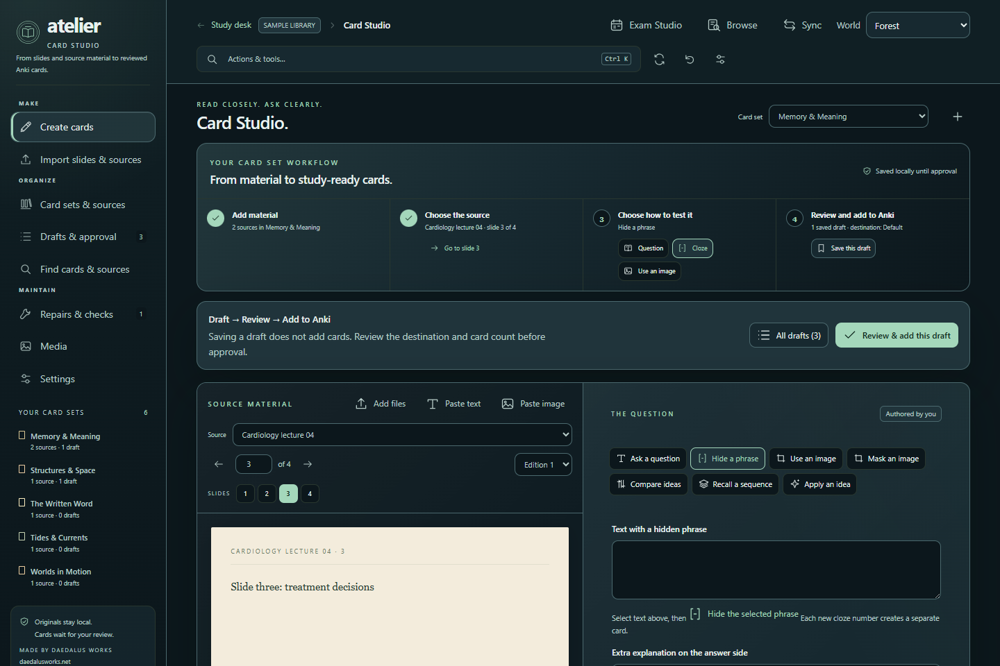
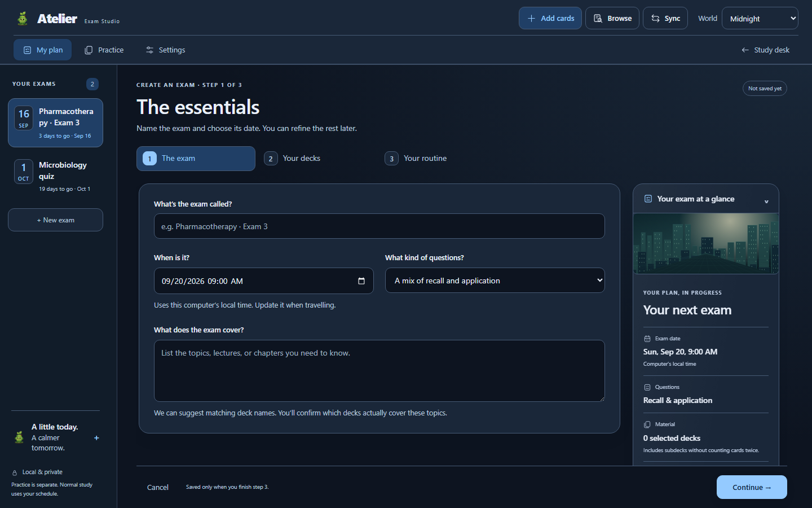

01
Organize and choose
Browse nested lecture folders, select the exact study scope, and return to saved drafts, masks, exam plans, and sessions.
Atelier for Anki desktop
One carefully finished workspace for your real Anki collection, organized card sets, slide and image creation, practice exams, and exact daily study choices.
No public download or AnkiWeb code is active yet.

One connected workspace
Atelier keeps Anki’s collection and scheduler at the center while giving longer projects, creation work, and exam preparation a coherent home.
Browse nested lecture folders, select the exact study scope, and return to saved drafts, masks, exam plans, and sessions.
Keep slides, PDFs, images, notes, and drafts in a card set. Choose the exact source page, build questions or image occlusions beside it, then approve cards into an Anki deck.

Build exam sessions from real folders and subdecks. Practice remains separate from normal scheduling unless a clearly labelled option changes it.

Make the workspace yours
The visual system reaches Home, Library, Widgets, Tools, Card and Mask Studio, exam flows, Pip, review cards, results, and progress.
Release boundary
There is no public add-on code, website destination, or download yet. The future listing will show its exact AnkiWeb identity, tested versions, installation steps, and recovery guidance.
Future approved updates must use that same AnkiWeb listing. This page cannot install an update or change a collection.
The cumulative installer retains preferences and Atelier’s local stores. Anki Sync does not include Atelier’s separate source, exam, and widget stores, so those folders need their own backup.
Native Windows checks use Anki 26.05. macOS, every display scale, and physical remotes remain release gates rather than advertised passes.